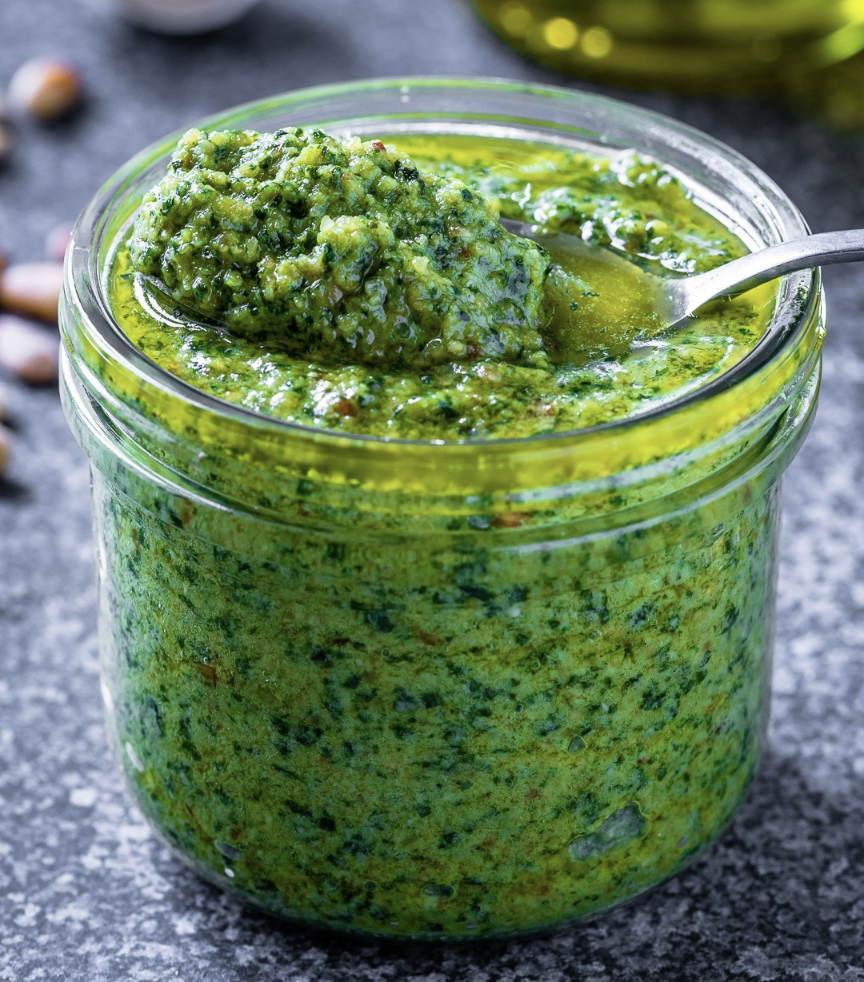
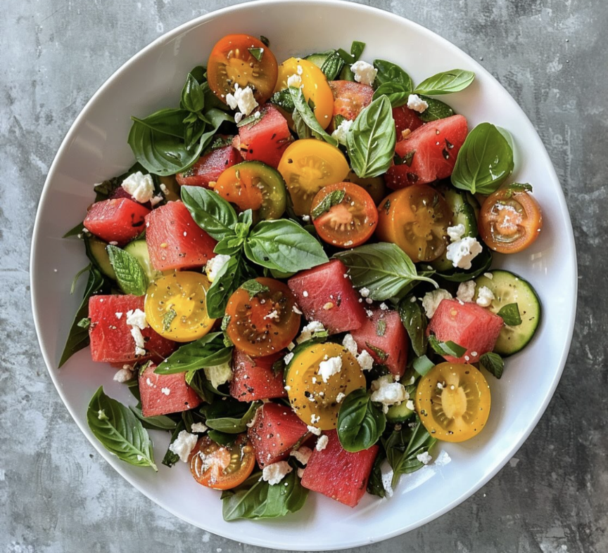
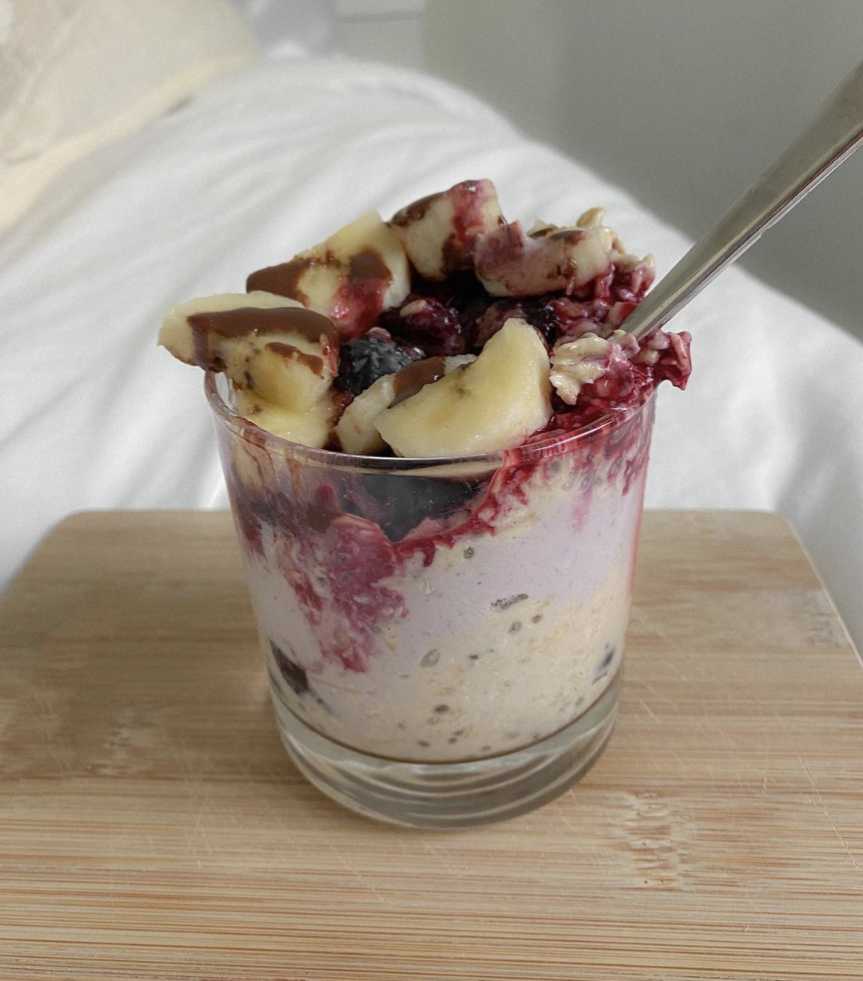

We use cookies to improve your experience. By using our site, you accept our cookie policy.
Welcome to My Recipe Blog
I love making dishes which are both healthy and tasty. Below, are some of my favorites.
Sourdough Bread
Sourdough bread is a labor of love that results in a delicious, tangy loaf. Perfect for sandwiches or just with a bit of butter.
Ingredients:
1 cup sourdough starter
1 1/2 cups warm water
4 cups all-purpose flour
2 teaspoons salt
Instructions:
Feed the starter: Make sure your sourdough starter is active. Feed it 4-12 hours before you plan to start baking.
Mix the dough: In a large mixing bowl, combine the sourdough starter and warm water. Mix in the flour and salt until a rough dough forms.
Autolyse: Cover the bowl with a towel and let the dough rest for 30 minutes to an hour.
Knead: Knead the dough by hand or with a stand mixer for about 10 minutes, until smooth and elastic.
First rise: Transfer the dough to a lightly oiled bowl, cover, and let it rise at room temperature for 4-12 hours, until it has doubled in size.
Shape: Turn the dough out onto a floured surface, shape it into a loaf, and place it in a proofing basket or bowl.
Second rise: Cover and let it rise again for 2-4 hours, or until it has doubled in size.
Preheat the oven: Place a Dutch oven in the oven and preheat to 450°F (230°C).
Score and bake: Carefully turn the dough out onto a piece of parchment paper. Score the top of the loaf with a sharp knife. Transfer the dough, with the parchment paper, into the preheated Dutch oven. Cover with the lid and bake for 20 minutes.
Finish baking: Remove the lid and bake for an additional 20-25 minutes, until the crust is deep golden brown and the loaf sounds hollow when tapped.
Cool: Let the bread cool completely on a wire rack before slicing.
Pesto Sauce

Pesto sauce is a vibrant and flavorful sauce made with fresh basil, garlic, pine nuts, Parmesan cheese, and olive oil. It's perfect for tossing with pasta, spreading on sandwiches, or drizzling over grilled meats and vegetables.
Ingredients:
2 cups fresh basil leaves, packed
2 cloves garlic
1/4 cup pine nuts, toasted
1/2 cup freshly grated Parmesan cheese
1/2 cup extra virgin olive oil
Salt and pepper, to taste
Instructions:
Prepare ingredients: Wash and dry the basil leaves. Toast the pine nuts in a dry skillet over medium heat until golden brown and fragrant, about 3-4 minutes.
Blend: In a food processor, combine the basil leaves, garlic, toasted pine nuts, and Parmesan cheese. Pulse until coarsely chopped.
Stream in olive oil: With the food processor running, gradually add the olive oil in a steady stream until the pesto reaches your desired consistency. You may need to scrape down the sides of the bowl occasionally.
Season: Season the pesto with salt and pepper to taste.
Store: Transfer the pesto to an airtight container and store in the refrigerator for up to one week. You can also freeze it for longer storage.
Summer Salad

Beat the summer heat with this refreshing and vibrant summer salad recipe! Packed with fresh, seasonal ingredients, this salad is the perfect light and healthy dish for any occasion.
Ingredients:
2 cups mixed greens (such as lettuce, spinach, arugula)
1 cup cherry tomatoes, halved
1 cucumber, sliced
1/2 red onion, thinly sliced
1/4 cup crumbled feta cheese
1/4 cup toasted pine nuts
1/4 cup fresh basil leaves, torn
1/4 cup balsamic vinaigrette dressing
Salt and pepper, to taste
Instructions:
Prepare ingredients: Wash and dry the mixed greens, cherry tomatoes, cucumber, and basil leaves.
Assemble salad: In a large salad bowl, combine the mixed greens, cherry tomatoes, sliced cucumber, thinly sliced red onion, crumbled feta cheese, toasted pine nuts, and torn basil leaves.
Add dressing: Drizzle the balsamic vinaigrette dressing over the salad. Season with salt and pepper to taste.
Toss: Gently toss the salad until all ingredients are evenly coated with the dressing.
Serve: Transfer the salad to serving plates or bowls. Garnish with additional basil leaves or crumbled feta cheese if desired. Serve immediately and enjoy!
This summer salad is bursting with flavor and freshness, making it the perfect dish for picnics, barbecues, or as a light lunch or dinner option. Customize it with your favorite ingredients and dressings for endless variations!
Overnight Oats

Start your day right with this delicious and nutritious overnight oats recipe! Made with simple ingredients and customizable toppings, these oats are perfect for a quick and convenient breakfast on busy mornings.
Mix: In a mason jar or airtight container, combine the rolled oats, milk, Greek yogurt, honey or maple syrup, vanilla extract, and a pinch of salt. Stir until well combined.
Refrigerate: Cover the jar or container and refrigerate overnight, or for at least 4 hours, to allow the oats to soften and absorb the liquid.
Serve: The next morning, give the oats a stir and add your favorite toppings such as fresh berries, sliced bananas, nuts, seeds, or nut butter. Enjoy cold or warm, straight from the jar or transferred to a bowl!
These overnight oats are not only delicious but also incredibly versatile. Experiment with different toppings and flavor combinations to create your perfect breakfast bowl!
Tofu Stir Fry
Elevate your weeknight dinner with this flavorful and nutritious tofu stir fry recipe! Packed with colorful vegetables, protein-rich tofu, and a savory sauce, this dish is quick, easy, and guaranteed to satisfy your taste buds.
Ingredients:
1 block firm tofu, pressed and cubed
2 tablespoons soy sauce or tamari
1 tablespoon rice vinegar
1 tablespoon hoisin sauce
1 teaspoon sesame oil
2 tablespoons vegetable oil, divided
2 cloves garlic, minced
1-inch piece of ginger, grated
1 bell pepper, sliced
1 cup broccoli florets
1 carrot, sliced
2 green onions, chopped
Sesame seeds and chopped cilantro, for garnish
Cooked rice or noodles, for serving
Instructions:
Prepare tofu: Press the tofu to remove excess moisture, then cut it into cubes.
Marinate: In a small bowl, whisk together soy sauce, rice vinegar, hoisin sauce, and sesame oil. Pour half of the marinade over the tofu cubes and let them marinate for at least 15 minutes.
Stir fry: In a large skillet or wok, heat 1 tablespoon of vegetable oil over medium-high heat. Add the marinated tofu cubes and cook until golden brown and crispy on all sides. Remove tofu from the skillet and set aside.
Sauté vegetables: In the same skillet, add the remaining tablespoon of vegetable oil. Add minced garlic, grated ginger, sliced bell pepper, broccoli florets, and sliced carrot. Stir fry for a few minutes until the vegetables are tender-crisp.
Combine: Return the cooked tofu to the skillet with the vegetables. Pour the remaining marinade over the tofu and vegetables. Stir everything together until well coated and heated through.
Serve: Garnish with chopped green onions, sesame seeds, and chopped cilantro. Serve the tofu stir fry hot over cooked rice or noodles. Enjoy!
This tofu stir fry is a delicious and satisfying meal that comes together in minutes. Feel free to customize the vegetables and adjust the sauce according to your taste preferences. It's perfect for a quick weeknight dinner or meal prep for busy days!